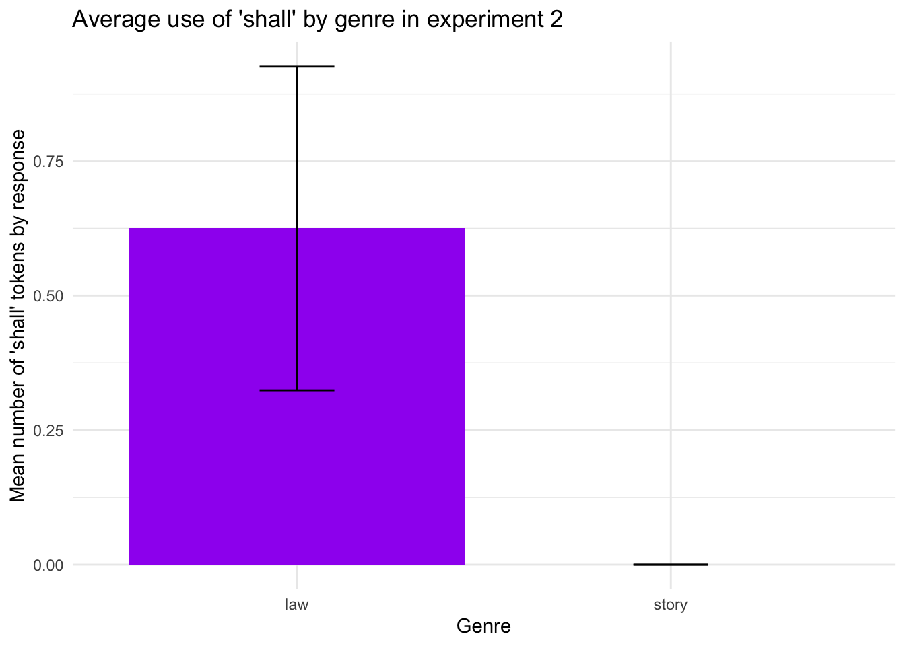
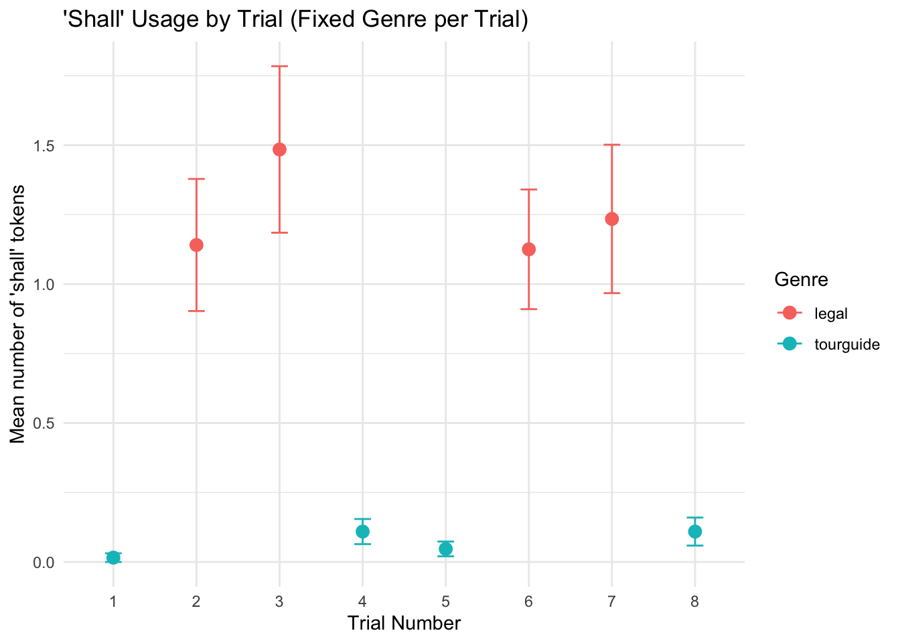

Genre, not contents, determine shall usage in legal texts
Author
Tilly Brooks (teb44@stanford.edu)
Published
June 7, 2025
Introduction
In their 2024 article “Even laypeople use legalese,” Martínez et al. (2024) run two experiments to better understand why legal language (“legalese”) is so complex, as measured through the use of center-embedding. Martínez et al. test two hypotheses about the complexity of legal language, the magic spell hypothesis and the copy-and-edit hypothesis. The magic spell hypothesis posits that legalese is purposefully written in a complex manner to give it a “ritualistic, spell-like element” as a performative utterance. The copy-and-edit hypothesis proposes that legalese is complex because it is the product of an iterative writing process in which additional information is inserted into existing sentences rather than added in separate ones. Across two production experiments, participants without legal training were tasked with writing stories, laws, and unoffical descriptions about crimes from scratch and in a step-by-step writing and editing process. The authors find that laypeople use more center-embedded syntax when writing legal texts, but that content produced through a writing and editing process does not not contain more center-embedded syntax than content produced all at once. These findings are consistent with the authors’ magic spell hypothesis but do not support the copy-and-edit hypothesis. At a theoretical level, these findings offer support for the view that the linguistic complexity associated with legal language functions as an indicator of the law’s performative effects.
In this replication project, I implement an experiment which prompts participants to write visitors’ guides and laws describing certain crimes. I aim to replicate the finding that it is genre, not writing process which motivates drafters of legal language to use complex language. In addition, I aim to assess whether usage of a linguistic property other than center-embedding (i.e., the central modal shall) varies by genre.
Methods
The experiment uses a within-subject design in which participants are instructed to (1) pretend they are tour guides and write a summary of a specific criminal statute for visiting tourists; and (2) pretend they are lawmakers and write a draft law about a specific crime. As an additional manipulation, participants are instructed to write from scratch (the “from scratch condition”) in some of their trials and in an editing process (the “editing condition”) in the other trials In both processes, participants are instructed to write a law or guidebook description based on provided specifications describing crimes. After completing their law or guidebook, participants move on to the next page. In the from scratch condition, participants move on to the next trial. In the editing condition, participants are informed that their supervisor (if in the tour guide condition) or their fellow lawmakers (if in the legal condition) has requested that they revise their original draft and are given additional specifications to incorporate into their draft. Participants then revise their original entry to reflect the added specifications.
Power Analysis
Martínez et al. (2024) report an odds ratio of 8.3 for their experiment. Given this, a sample of approximately 52 would be needed to achieve 80% power, a sample of approximately 68 would be needed to achieve 90% power, and a sample of approximately 84 would be needed to achieve 95% power.
library(pwr)your_d =log(8.3)*((sqrt(3))/pi)# For t-testspwr.t.test(d = your_d, sig.level =0.05, power =0.80, type ="two.sample", alternative ="two.sided")
Two-sample t test power calculation
n = 12.56813
d = 1.166753
sig.level = 0.05
power = 0.8
alternative = two.sided
NOTE: n is number in *each* group
your_d =log(8.3)*((sqrt(3))/pi)# For t-testspwr.t.test(d = your_d, sig.level =0.05, power =0.90, type ="two.sample", alternative ="two.sided")
Two-sample t test power calculation
n = 16.45974
d = 1.166753
sig.level = 0.05
power = 0.9
alternative = two.sided
NOTE: n is number in *each* group
your_d =log(8.3)*((sqrt(3))/pi)# For t-testspwr.t.test(d = your_d, sig.level =0.05, power =0.95, type ="two.sample", alternative ="two.sided")
Two-sample t test power calculation
n = 20.1053
d = 1.166753
sig.level = 0.05
power = 0.95
alternative = two.sided
NOTE: n is number in *each* group
Planned Sample
In order to achieve 80% power and account for the possibility of participants dropping out, the planned sample size for this project is 60. Participants who are native speakers of U.S. English will be recruited on the platform Prolific.
Materials
The quoted portions of this section are drawn directly from Martínez et al. (2024).
The materials in the experiment consisted of eight items. Each item consisted of instructions to write a law or guide for tourists describing the details of a specific crime. For each item, two manipulations were available, genre and sequencing. The genre manipulation consisted of a legal condition and a tour guide condition. In the legal condition, participants were asked to write a law matching the provided specifications of a crime. In the tour guide condition, participants were asked to prepare a visitors’ guide describing the contents of the provided specifications of a crime. “Both conditions had an associated cover story explaining the motivation behind the task. In the legal condition, participants were told that they were a ‘lawmaker’ who was ‘tasked with writing a law that prohibits a certain crime, and specifies the punishment for that crime if the crime is committed.’” In the tour guide condition, participants were told that they were a “tour guide working in a country with strict crime laws” who was “tasked with writing a description of the precondition for a particular crime in your country, as well as the punishment for committing that crime.”
“The second manipulation was sequencing, whose conditions consisted of a from-scratch condition and an editing condition. In the from-scratch condition, the details and propositions of the crime were presented all at once. In the editing condition, in contrast, the propositions were presented in two stages. In stage 1 (Fig.3), the version of the crime included within the instructions was paired-down and did not contain all of the propositions. In Stage 2, the version of the crime included all of the propositions, and the instructions directed participants to edit their text so as to include all of the additional instructions (see blue text of Fig. 3).”
Procedure
The quoted portions of this section are drawn directly from Martínez et al. (2024).
“Participants were recruited via the online platform Prolific.” I conducted a power analysis based on the findings in Martínez et al. (2024) to compute sample size. Based on this analysis, I determined that a minimum of 52 participants would be necessary to achieve at least 80% power. In order to accommodate this and account for potential exclusions, I recruited 60 participants.
“Participants were eligible if they resided in the United States, were 18 years or older, and native speakers of English. Each participant completed 8 trials of the same series of tasks”
“On a given trial, participants would be presented with materials in one of the four conditions and asked to write either a law or story in accordance with the material’s instructions. As noted above, when in the from-scratch condition, participants were asked to draft their text all at once, whereas in the editing condition, participants were first asked to write an initial draft based on a paired-down version of the crime described, and then subsequently presented with the full version of the crime and asked to edit their draft to incorporate the additional details associated with that version.” No participant saw the same item more than once and was presented with each of the four conditions at least once. Each participant saw One item in the tour guide, editing condition, three items in the tour guide, from scratch condition, two items in the law, editing condition, and two items in the law, from scratch condition.
Before each trial, participants were informed of the genre of the upcoming trial and prompted to confirm that they they understood their role for the trial. “Participants were not allowed to proceed to the trial until answering the comprehension check correctly.”
“Prior to completing the first trial, participants were asked to promise that they would not use a language model [such as generative pre-trained transformer (GPT)] to complete the task.”
“Participants were retained in the analysis if they completed all trials and were determined not to use a language model in their responses.” Thus 67 out of 70 participants were retained in the final analysis.
Analysis Plan
Participant responses will be extracted and then analyzed for how shall is used. I will use quantitative analysis to assess the frequency of shall usage by trial and genre. The effect of trial and genre manipulation on shall usage will be assessed using two models: a random effects poisson regression with frequency of shall usage in participant responses as the outcome variable and a random effects logistic regression using the presence or absence of shall as the outcome variable. Genre is the fixed effect of interest and random effects consist of participant and item. Because the primary analysis of interest in this replication is distinct from that in the original paper, this analysis will also be applied Martínez et al.’s (2024) results. In the case of trials in the editing condition, only the final response is considered.
I assess the authors’ magic spell and copy-and-edit hypotheses. If the magic spell hypothesis is correct, I expect to find that there is a significant effect of genre on shall usage, with shall being used more frequently in the legal condition than the tour guide condition. If the copy-and-edit hypothesis is correct, I expect to find a significant effect of sequencing on shall usage, but relative similarity in shall usage in legal and tour guide trials. In addition to assessing these two hypotheses, I introduce and another hypothesis: the deonticity expressing hypothesis. According to this hypothesis, legal language uses shall at higher rates than other genres because its function is to describe deontic objects like duties and prohibitions. If this hypothesis is correct, I expect that there will not be a significant difference in shall usage across the two genres or sequencing conditions. Rather, they deonticity expressing hypothesis predicts that usage of shall will be relatively high and constant across the four conditions in the experiment because participants will be describing deontic objects in each trial.
Differences from Original Study
There were a number of differences between this project and the original study.
Sample Size: The sample size for the replication project (60 participants recruited for the main sample) is substantially smaller than that in Martínez et al. 2024 (220 participants recruited). Based on the power analysis conducted for this project, this smaller sample is sufficient for 80% power.
Materials : The crime specifications used in this experiment are the same as those used in Martínez et al.’s experiment 1, but the manipulations were different. First, the genre manipulation involves a legal condition and a tour guide condition rather than a legal condition and a story condition. This is the genre manipulation used in Martínez et al.’s second experiment. Like experiment 1, the sequencing condition is retained, but participants are exposed to one item in the tour guide & editing condition, three items in the tour guide & from scratch condition, two items in the legal & editing condition, and two items in the legal & from scratch condition. Where the analysis of the replication focuses on genre rather than sequencing, this difference is not anticipated to make a substantial difference in the findings of this project.
Procedure : I did not ask participants to confirm that they did not use a language model at the end of the final trial. Martínez et al. excluded participants who did not complete all trials or who were determined to have used a language model in their responses. In addition, the comprehension check between trials in my experiment prompted participants to click a button indicating that they understood their role rather than asking them to type their role into a text box.
Analysis : There are two major analytic differences between the original study and this replication project. First, usage of the modal shall is the main focus of analysis rather than center-embedding. Second, genre is the primary manipulation of interest rather than genre and sequencing (although I still assess the effect of sequencing on shall usage).
Actual Sample
The final sample includes 67 participants. Three participants were excluded for not completing all trials.
Differences from pre-data collection methods plan
I had to run the main sample twice due to an issue with OSF. Other than this, there were no differences from the pre-data collection methods plan.
Results
Data preparation
Data organization
Column Creation
# add column for genre to main dataall_data <- all_data %>%mutate(domain =case_when( condition %in%c("law, editing", "law, from scratch") ~"legal", condition %in%c("tour guide, editing", "tour guide, from scratch") ~"tourguide",TRUE~NA_character_ ) )# add column for sequencingall_data <- all_data %>%mutate(sequencing =case_when( condition %in%c("tour guide, from scratch", "law, from scratch") ~"from scratch", condition %in%c("tour guide, editing", "law, editing") ~"editing",TRUE~NA_character_ ) )# add columns for genre and sequencing to experiment 1 data# NOTE: it is not necessary to go trhouhg this process for the experiment 2 data because there is no sequencing manipulation and the data already includes a genre columnexp1_data <- exp1_data %>%mutate(domain =if_else(str_detect(column_name, "law"), "legal", "fiction_author"),sequencing =if_else(str_detect(column_name, "full"), "from_scratch", "editing") )#get total number of shalls used in main datashall_count <- all_data %>%filter(!is.na(response)) %>%mutate(num_shall =str_count(response, regex("\\bshall\\b", ignore_case =TRUE))) %>%summarise(total =sum(num_shall))#get total number of shalls used in experiment 1 responsesexp1_shall_count <- exp1_data %>%mutate(num_shall_exp1 =str_count(response, regex("\\bshall\\b", ignore_case =TRUE))) %>%summarise(total =sum(num_shall_exp1))#get total number of shalls used in experiment 2 responsesexp2_shall_count <- exp2_data %>%mutate(num_shall_exp2 =str_count(response, regex("\\bshall\\b", ignore_case =TRUE))) %>%summarise(total =sum(num_shall_exp2))# add column counting shalls per row to main data frameall_data <- all_data %>%mutate(num_shall =str_count(response, regex("\\bshall\\b", ignore_case =TRUE)))# add column counting shalls per row to experiment 1 data frameexp1_data <- exp1_data %>%mutate(num_shall_exp1 =str_count(response, regex("\\bshall\\b", ignore_case =TRUE)))# add column counting shalls per row to experiment 2 data frameexp2_data <- exp2_data %>%mutate(num_shall_exp2 =str_count(response, regex("\\bshall\\b", ignore_case =TRUE)))
Confirmatory analysis
#get shall count by domain for main sampleshall_by_domain <- all_data %>%group_by(domain) %>%summarise(total_shall =sum(num_shall, na.rm =TRUE),mean_shall =mean(num_shall, na.rm =TRUE),n =n())#shall_by_domain#get shall count by domain for experiment 1exp1_shall_by_domain <- exp1_data %>%group_by(domain) %>%summarise(total_shall_exp1 =sum(num_shall_exp1, na.rm =TRUE),mean_shall_exp1 =mean(num_shall_exp1, na.rm =TRUE),n =n())exp1_shall_by_domain
#get shall count by domain for experiment 2exp2_shall_by_domain <- exp2_data %>%group_by(genre) %>%summarise(total_shall_exp2 =sum(num_shall_exp2, na.rm =TRUE),mean_shall_exp2 =mean(num_shall_exp2, na.rm =TRUE),n =n())#exp2_shall_by_domain #get shall count by sequencing for main sampleshall_by_sequencing <- all_data %>%group_by(sequencing) %>%summarise(total_shall =sum(num_shall, na.rm =TRUE),mean_shall =mean(num_shall, na.rm =TRUE),n =n())#shall_by_sequencing#get shall count by sequencing for experiment 1exp1_shall_by_sequencing <- exp1_data %>%group_by(sequencing) %>%summarise(total_shall_exp1 =sum(num_shall_exp1, na.rm =TRUE),mean_shall_exp1 =sum(num_shall_exp1, na.rm =TRUE),n =n())#exp1_shall_by_sequencing
Visualizations of results from Martínez et al. (2024)
Although the key analysis of interest in this project is distinct from that used in Martínez et al. (2024), the data from the authors’ experiment can be analyzed according to the method used here. The visualizations below offer support for the view that genre is more impactful on shall usage than writing condition. The data from experiments 1 and 2 in Martínez et al. (2024) reveal that there is an observable difference in mean shall usage between legal and non-legal writing, even when the conceptual complexity is consistent across tasks. In addition, data from experiment 1 indicates that the difference in shall usage by writing condition is not as large as that observed across genres. To the extent that shall usage is able to be used as a proxy measure for center-embedding usage, this is consistent with the authors’ findings in the original study.
# barplot showing shall usage by genre for experiment 1exp1figa <- exp1_data %>%filter(!is.na(domain))%>%mutate(domain =factor(domain, levels =c("legal", "fiction_author"))) %>%group_by(domain)%>%summarise(mean_shall_exp1 =mean(num_shall_exp1, na.rm =TRUE),se_exp1 =sd(num_shall_exp1, na.rm =TRUE) /sqrt(n()) ) %>%ggplot(aes(x = domain, y = mean_shall_exp1)) +geom_bar(stat ="identity", fill ="chocolate4") +geom_errorbar(aes(ymin = mean_shall_exp1 - se_exp1, ymax = mean_shall_exp1 + se_exp1), width =0.2) +labs(title ="Use of 'shall' by genre (exp.1)",x ="Genre",y ="Mean number of 'shall' tokens by response") +theme_minimal()exp1figb <- exp1_data %>%filter(!is.na(sequencing))%>%group_by(sequencing)%>%summarise(mean_shall_exp1 =mean(num_shall_exp1, na.rm =TRUE),se_exp1 =sd(num_shall_exp1, na.rm =TRUE) /sqrt(n()) ) %>%ggplot(aes(x = sequencing, y = mean_shall_exp1)) +geom_bar(stat ="identity", fill ="purple") +geom_errorbar(aes(ymin = mean_shall_exp1 - se_exp1, ymax = mean_shall_exp1 + se_exp1), width =0.2) +labs(title ="Use of 'shall' by sequencing (exp.1)",x ="Writing Condition",y ="Mean number of 'shall' tokens by response") +theme_minimal()exp1figa + exp1figb
# barplot showing shall usage by genre for experiment 2exp2fig <- exp2_data %>%filter(!is.na(genre))%>%group_by(genre)%>%summarise(mean_shall_exp2 =mean(num_shall_exp2, na.rm =TRUE),se_exp2 =sd(num_shall_exp2, na.rm =TRUE) /sqrt(n()) ) %>%ggplot(aes(x = genre, y = mean_shall_exp2)) +geom_bar(stat ="identity", fill ="purple") +geom_errorbar(aes(ymin = mean_shall_exp2 - se_exp2, ymax = mean_shall_exp2 + se_exp2), width =0.2) +labs(title ="Average use of 'shall' by genre in experiment 2",x ="Genre",y ="Mean number of 'shall' tokens by response") +theme_minimal()exp2fig

Visualizations from main sample
Consistent with the findings in Martínez et al. (2024), data from the replication experiment indicate that genre has a greater effect on shall usage than writing condition. This is consistent with the analysis above.
#barplot showing shall usage by genre for main samplefiga <- all_data %>%filter(!is.na(domain))%>%group_by(domain) %>%summarise(mean_shall =mean(num_shall, na.rm =TRUE),se =sd(num_shall, na.rm =TRUE) /sqrt(n()) ) %>%ggplot(aes(x = domain, y = mean_shall)) +geom_bar(stat ="identity", fill ="chocolate4") +geom_errorbar(aes(ymin = mean_shall -se, ymax = mean_shall + se), width =0.2) +labs(title ="Use of 'shall' by genre in main sample",x ="Genre",y ="Mean number of 'shall' tokens by response" ) +theme_minimal()# shall usage by sequencing# barplot to show shall usage by sequencingfigb <- all_data %>%filter(!is.na(sequencing))%>%group_by(sequencing) %>%summarise(mean_shall =mean(num_shall, na.rm =TRUE),se =sd(num_shall, na.rm =TRUE) /sqrt(n()) ) %>%ggplot(aes(x = sequencing, y = mean_shall)) +geom_bar(stat ="identity", fill ="purple") +geom_errorbar(aes(ymin = mean_shall -se, ymax = mean_shall + se), width =0.2) +labs(title ="Use of 'shall' by sequencing",x ="Writing Condition",y ="Mean number of 'shall' tokens by response" ) +theme_minimal()figa + figb
Looking at all four conditions together, average shall usage is higher in trials in the legal genre regardless of whether the text was written from scratch or in an iterative process.
#make a barplot to show shall usage by conditionall_data %>%filter(!is.na(condition))%>%group_by(condition) %>%summarise(mean_shall =mean(num_shall, na.rm =TRUE),se =sd(num_shall, na.rm =TRUE) /sqrt(n()) ) %>%ggplot(aes(x = condition, y = mean_shall)) +geom_bar(stat ="identity", fill ="plum") +geom_errorbar(aes(ymin = mean_shall -se, ymax = mean_shall + se), width =0.2) +labs(title ="Average use of 'shall' by condition",x ="Condition",y ="Mean number of 'shall' tokens by response" ) +theme_minimal()
Overall, these results are like to Martínez et al.’s findings, which indicated that genre effects center-embedding usagh more than writing process. Similarly, genre appears to have a much greater effect on shall usage than sequencing. Although there is variation in shall usage across trials, writing in the legal genre uses shall at much higher rates than writing in the tour guide genre. In addition, shall usage in writing in the legal genre appears to vary to a greater extent than shall usage in the non-legal genre.
all_data %>%filter(!is.na(trial_number), !is.na(domain)) %>%group_by(trial_number, domain) %>%summarise(mean_shall =mean(num_shall, na.rm =TRUE),se =sd(num_shall, na.rm =TRUE) /sqrt(n()),.groups ="drop" ) %>%ggplot(aes(x =factor(trial_number), y = mean_shall, color = domain)) +geom_point(size =3) +geom_errorbar(aes(ymin = mean_shall - se, ymax = mean_shall + se), width =0.2) +labs(title ="'Shall' Usage by Trial (Fixed Genre per Trial)",x ="Trial Number",y ="Mean number of 'shall' tokens",color ="Genre" ) +theme_minimal()

Statistical Models for Replication Experiment and Martínez et al. (2024)
The outcome variable of interest in this project is shall usage. However, this variable may be measured in multiple ways. On the one hand, the number of times shall is used per response is a viable anayltic option. In order to assess the effect of genre and writing condition shall usage measured in this way, I use a random effects poisson regression model. In the alternative, shall usage may be measured in binary terms, where the relevant outcome variable is whether a participant opted to use shall at all in their response. This measure of shall usage is assessed with logistic regression.
General Linear Mixed Effects Model Results for Replication Experiment
In the model below, the effect of genre (“domain” in the code below) on the number of times shall is used is assessed, with individual participant (“file” in the code below) and item (“trial_index” in the code below). Results indicate that there is a significant effect of genre on shall usage (p = 0.00115). Participants writing in the legal genre are predicted to use shall more frequently in the legal genre (estimated mean usage of shall in this condition is e-0.8782, or 0.415 times per response) than in the tour guide condition (estimated mean usage of shall in this condition is e-5.587, or 0.004 times per response). Although variation across items was limited (standard deviation of random slope for item = 0.075), there was much greater variation in how much different participants adjusted in shall usage by genre (standard deviation of random slope for participant = 4.363).
all_data %>%filter(!is.na(num_shall))%>%glmer(num_shall~domain+(1+domain|file)+(1|trial_index), data=., family ="poisson")%>%summary()
Generalized linear mixed model fit by maximum likelihood (Laplace
Approximation) [glmerMod]
Family: poisson ( log )
Formula: num_shall ~ domain + (1 + domain | file) + (1 | trial_index)
Data: .
AIC BIC logLik -2*log(L) df.resid
755.9 781.3 -372.0 743.9 506
Scaled residuals:
Min 1Q Median 3Q Max
-2.867 -0.339 -0.041 -0.034 3.403
Random effects:
Groups Name Variance Std.Dev. Corr
file (Intercept) 2.790067 1.67035
domaintourguide 19.038720 4.36334 -0.32
trial_index (Intercept) 0.005663 0.07525
Number of obs: 512, groups: file, 64; trial_index, 8
Fixed effects:
Estimate Std. Error z value Pr(>|z|)
(Intercept) -0.8782 0.2701 -3.251 0.00115 **
domaintourguide -5.5867 1.8032 -3.098 0.00195 **
---
Signif. codes: 0 '***' 0.001 '**' 0.01 '*' 0.05 '.' 0.1 ' ' 1
Correlation of Fixed Effects:
(Intr)
domaintorgd -0.141
Although genre has a significant effect on shall usage, sequencing does not.
all_data %>%filter(!is.na(num_shall))%>%glmer(num_shall~sequencing+(1+sequencing|file)+(1|trial_index), data=., family ="poisson")%>%summary()
Generalized linear mixed model fit by maximum likelihood (Laplace
Approximation) [glmerMod]
Family: poisson ( log )
Formula: num_shall ~ sequencing + (1 + sequencing | file) + (1 | trial_index)
Data: .
AIC BIC logLik -2*log(L) df.resid
819.1 844.6 -403.6 807.1 506
Scaled residuals:
Min 1Q Median 3Q Max
-2.4019 -0.3622 -0.2033 -0.0734 6.4898
Random effects:
Groups Name Variance Std.Dev. Corr
file (Intercept) 2.8036 1.6744
sequencingfrom scratch 0.1081 0.3288 -0.12
trial_index (Intercept) 2.3082 1.5193
Number of obs: 512, groups: file, 64; trial_index, 8
Fixed effects:
Estimate Std. Error z value Pr(>|z|)
(Intercept) -1.6985 0.9248 -1.837 0.0663 .
sequencingfrom scratch -1.0336 1.1509 -0.898 0.3691
---
Signif. codes: 0 '***' 0.001 '**' 0.01 '*' 0.05 '.' 0.1 ' ' 1
Correlation of Fixed Effects:
(Intr)
sqncngfrmsc -0.759
Logistic Regression Results
Treating the presecnce of absence f
Discussion
Summary of Replication Attempt
I find a significant effect of genre on usage of the central modal shall in the responses. This is consistent with Martínez et al.’s finding. I take this to indicate that support for the authors’ conclusion that legalese is convoluted because legal writers want to convey something, not because the conceptual complexity of the genre demands it. These results are consistent with the magic spell hypothesis and inconsistent with the deonticity expressing and copy-and-edit hypotheses.
Commentary
Although the results of the study are consistent with the magic spell hypothesis, an important question remains unanwered: why do the particular strategies we see in legalese (e.g., center-embedding, uncommon modals) seem to make statutes sound more authoritative? I hypothesize that the markedness of these constructions is the explanation. It may be the case that the infrequency of shall in other contexts allows it to be easily recognizable as serving a particular function in the legal context. This is why shall is used in contexts where we might expect to see a more common modal like must.
 Although there is variation in shall usage across trials, writing in the legal genre uses shall at much higher rates than writing in the tour guide genre. In addition, shall usage in writing in the legal genre appears to vary to a greater extent than shall usage in the non-legal genre.
Although there is variation in shall usage across trials, writing in the legal genre uses shall at much higher rates than writing in the tour guide genre. In addition, shall usage in writing in the legal genre appears to vary to a greater extent than shall usage in the non-legal genre.